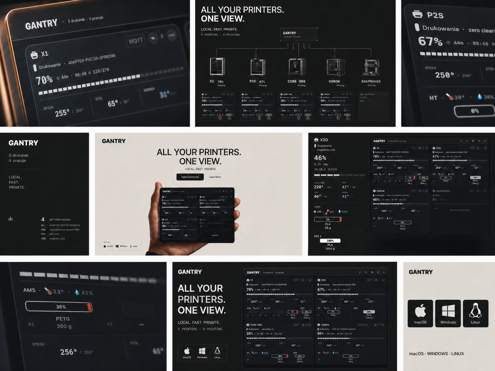

ALL YOUR PRINTERS.
ONE TELEGRAM.
ONE TELEGRAM.
LOCAL. FAST. PRIVATE. · 7 COMMANDS · 6 CONTROLS
GantryAppTelegram bot
ALERTS ↓ STATUS ↓ CONTROL ↑ CAMERA ↑

BOT
CONTROL
CONTROL
7
COMMANDS
/statuscontrol
/allfleet
/spoolsfilament
/historyprints
/watchcamera
/mutesilence
/allfleet
/spoolsfilament
/historyprints
/watchcamera
/mutesilence
YOUR PRINTERS.
ONE CHAT.
ONE CHAT.
STATUS · CONTROL · ALERTS · CAMERA
Connect TelegramSee commands


/ TELEGRAM BOTLive telemetry and safe controls in a real conversation.
TELEGRAM CONTROL ↔ GANTRY DASHBOARD
SET ONCE.
CONTROL
FROM CHAT.
CONTROL
FROM CHAT.
Gantry keeps the connection. Telegram carries the status and commands.
SETTINGSBOT API
UstawieniaGantry · Zaawansowane
OgólneWyglądZaawansowane
TELEGRAM
Wysyłaj powiadomienia
Token bota
745162…••••••
Chat ID
123456789
Test połączenia
Wysłano ✓
Wysłano ✓
TELEGRAMmacOS · Windows · Linux